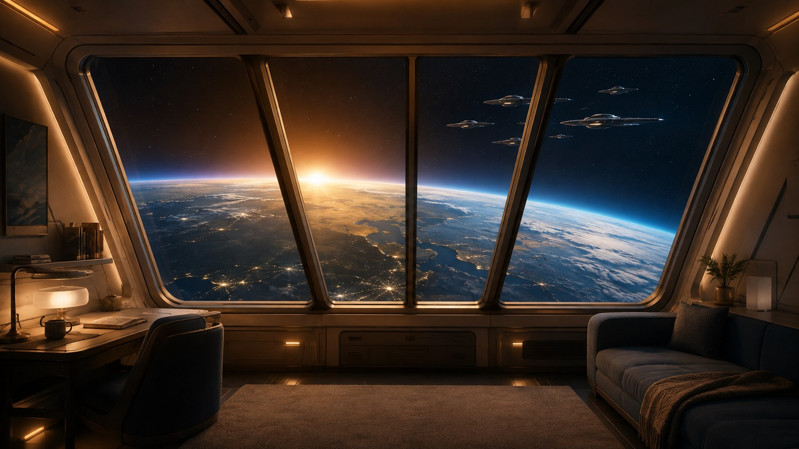
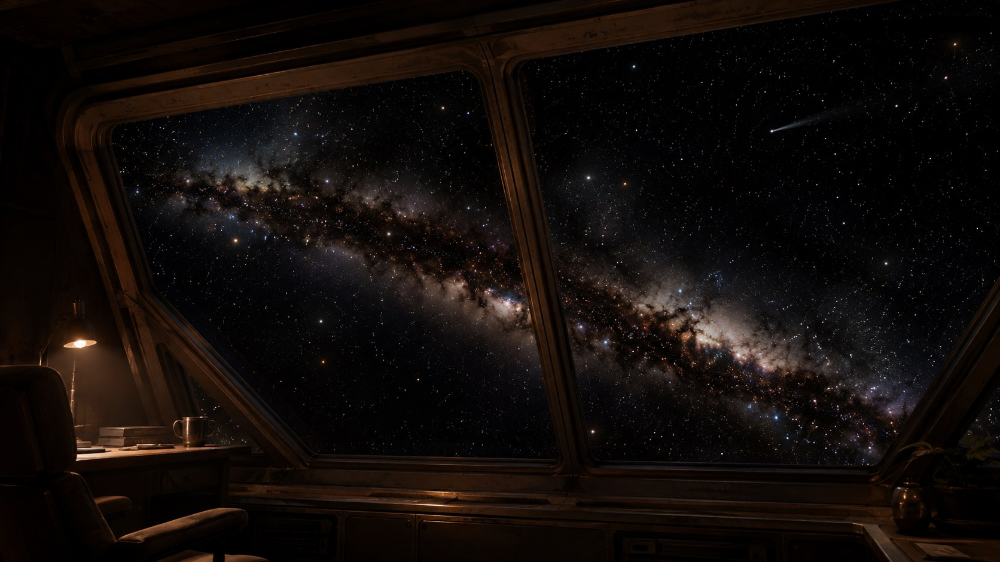
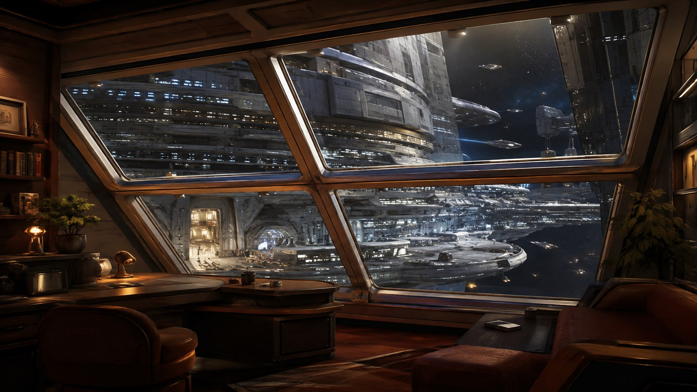
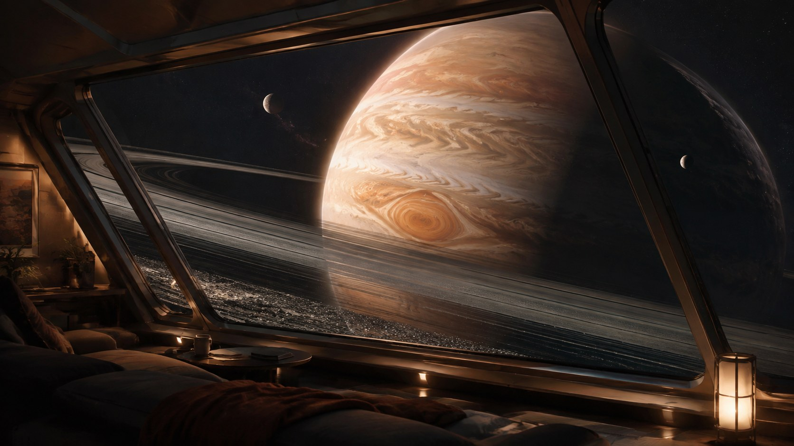

A restorative starship-officer fantasy for Meta Quest 3.
It repeated the inherited structure—destinations, ambience, events—and renamed the pieces. It did not define why this place should matter, what makes scale believable in VR, or how we would reach a visual bar beyond procedural placeholders.
Immediate reset: remove the blob cat; retire the “New Hope 2.0” claim; keep existing apps and branches as rollback evidence; make no more invisible headline features.
Not through exposition. Through five views that let the player supply their own memories.
Stars without landmarks. The original pull of the unknown. No spectacle is needed beyond depth, darkness and the impossible number of lights.
A storm-wrapped giant close enough to humble you. Exploration as privilege: being present where almost nobody has stood watch.
Other ships keeping station in silence. Fellowship without chatter; the sense that your crew and your fleet are out there with you.
A colossal station at rest. Civilization made visible at scale: somewhere to return, repair and belong.
An Earth-like horizon entering dawn. The reason service matters: fragile beauty below, and the possibility of going home.
No canon biography, mission text or forced voice-over. Names and atmosphere suggest a life; the player completes it.
The room is shelter. The view is vocation.

The cabin stays warm, tactile and human-sized. Beyond its mullions: true black, unreachable distance and enormous forms. The contrast creates safety without shrinking the universe.
Every view includes readable reference sizes. Window frame → service craft → capital structure → planet → star field. Without the ladder, a kilometre-wide station reads like a toy.
Black space is not empty production value. It gives bright objects power, prevents visual fatigue and makes the room feel genuinely off-world.
If a world turns, its light changes. If a shuttle passes, station beacons answer. If dawn rises, cabin light warms. Nothing drifts merely because an update loop exists.
Meaningful change happens over minutes. Stillness is the baseline; movement is noticed because it is rare and legible.
The view must survive small natural head movements. Near exterior elements show restrained parallax; distant bodies remain truly distant. The glass never feels like a television.
A twenty-minute session has a quiet dramatic shape. Nothing asks for attention; the timing simply makes staying worthwhile.
Fade through darkness. Exterior, reflected cabin light and sound settle together. The composition establishes itself immediately; no tutorial panel blocks the view.
The vista breathes at geological or orbital speed. Cloud bands evolve, station traffic follows routes, ships keep formation. The player can read, sit or simply look.
One destination-specific event arrives: a moon emerges from a ring shadow, a fleet turns toward dawn, or the station extinguishes one hemisphere for night cycle. It is composed, not randomly selected.
The scene returns to quiet continuity. No fireworks loop. The officer may remain indefinitely or choose another window.
Five large, clearly different visual tiles.
Quiet preserves ambient motion but omits service traffic and the grace note.
Still removes horizon travel and formation manoeuvres. It is always the default for atmosphere scenes.
No forced auto-tour. No gamification, collectibles, chores, NPC chatter or “engagement” systems. This is a place to recover.

Scale becomes belonging.
Stars only, but not a flat texture: a galactic river with dust structure, colour-temperature variation, deep black voids and three restrained parallax layers.
Grace note: distant cometA modular megastructure continues beyond the window. Habitat rhythms, docking spars and tiny service traffic make it feel inhabited and kilometres wide.
Grace note: night cycleTwo original ship families at distinct distances. They do not patrol the window like fish; they hold station with minute corrections and shared navigation-light grammar.
Grace note: fleet turnStation actions belong to the station. Fleet actions belong to the fleet. A comet belongs to deep space. Context makes an event feel observed rather than spawned.
Authored coherence
A gas giant worth approaching again from first principles: storms with dimensional flow, ring shadow, moons and a night side—not six colour presets.
WonderGrace note: moonriseThe emotional culmination: curved horizon, layered clouds, water and land, sparse night lights and sunrise. “Still” is an orbital tableau; “Drift” adds slow atmospheric passage.
HomeGrace note: dawnThe Long Formation can share this destination occasionally, but it also exists as a dedicated deep-space view.
Breathtaking does not require modelling the universe. It requires spending geometry, texture, motion and light where human vision reads scale.
High-resolution sky dome or procedural star field; galactic dust; nebular haze; atmosphere scattering. Stable at infinity.
One planet, station or fleet composition with LODs, authored silhouettes, baked detail and selective shaders.
Moons, docking craft, windows, beacons, cloud shadow and navigation lights establish kilometres and orbital distance.
One controlled exterior spill light, restrained glass reflection and destination sound make the two spaces causally connected.
Concept frame → PC reference scene → Quest build → fixed-seat capture → visual gap list. A milestone remains open until the largest perceptual gaps are closed.
Sustain 72 Hz on Quest 3 with headroom: target CPU and GPU frame times at or below 11 ms, no thermal collapse in a 45-minute session, and no comfort-breaking stutter during transitions.
Concept art defines mood, composition and scale—not asset fidelity promises. All final assets must be original or compatibly licensed with recorded provenance.
Ranges are planning estimates, not release promises. After M1, actual Quest frame time and the reference-to-headset gap determine the forecast.
Approved fixed-seat captures and headset review.
Twenty quiet minutes without fatigue or vection.
72 Hz minimum, transition stability and thermal headroom.
Likely planning range: roughly 7–12 focused weeks to a real 2.0, depending on how closely the Quest build can approach the approved station and atmosphere concepts. M1 is the calibration milestone.
The roadmap is subordinate to these truths. If an implementation fails them, we change the implementation—not the standard.
The player should eventually take off the headset and feel that the real room has the wrong window.
Create a new development branch for The Quiet Watch, archive New Hope as historical evidence, and execute M0. The first installable deliverable is not another planet—it is the rebuilt stars-only view plus the real selector.